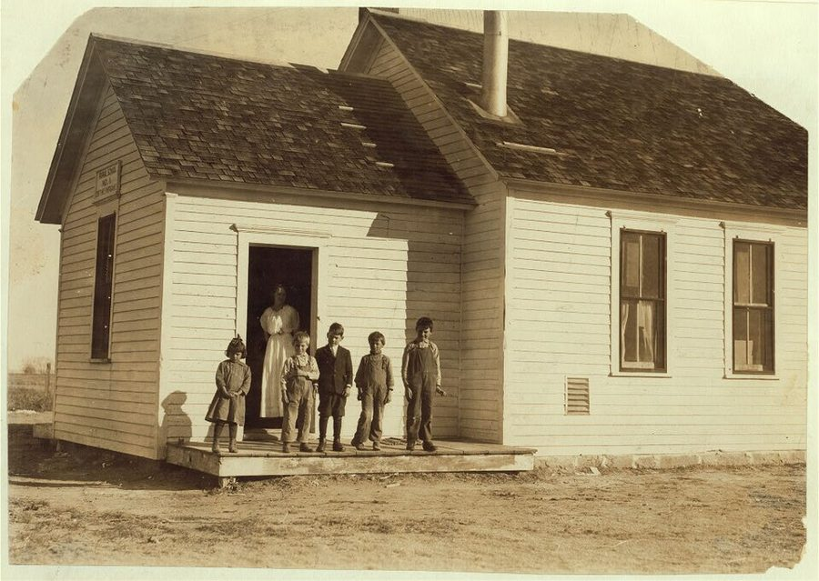
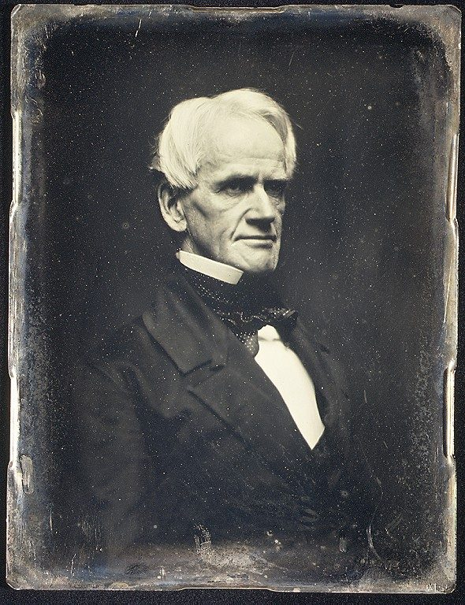
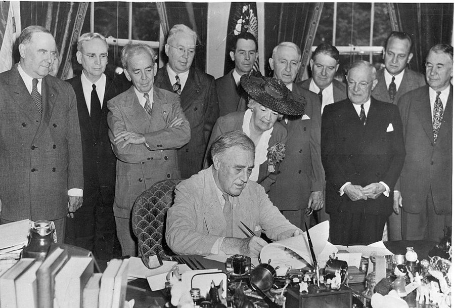
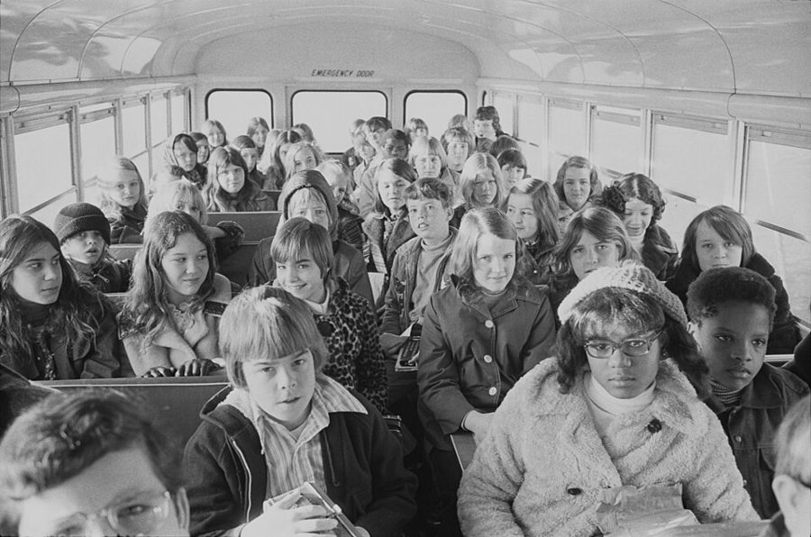
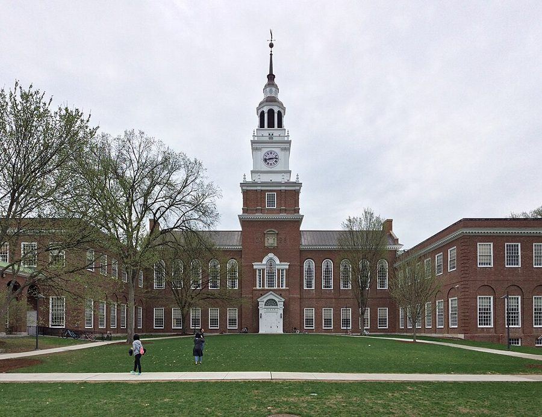

这一章在做什么
作者从美国人对学校的自豪讲起，然后说这份自豪已经褪色：城里的穷孩子上着最差的学校。诊断是权力从家长手里流到了职业教育者和越来越集中的官僚系统；证据是经费和人手一路涨、学生和成绩一路跌。中小学的药方是代金券，作者逐条回应七种反对。大学部分换了个角度：低学费补贴的多是中高收入家庭，药方是按将来收入还钱的融资或大学代金券。读的时候抓两条线：谁在给学校付钱，谁在替孩子做选择。

1915 年 10 月 Lewis Hine 拍的一所乡村学校，牌子上写着 Morgan 县第 3 学区第 1 号乡村学校。§2 说的「一室学校」和地方学校委员会，就是这种规模：家长认识老师，也认识管学校的人。Lewis Hine，公有领域，维基共享资源 读之前：先下注
这一章拿第 1 章的两样工具来看学校。价格那一样：家长交不交钱、钱跟着谁走，决定了学校听谁的。政府职责那一样：作者承认教育可能有落在第三方身上的好处（第 1 章 §5 说的外部性，本章 §5 讨论卡内基报告时再谈），孩子又属于第 1 章第四项职责要照顾的人，所以他不主张政府撒手，而是主张政府出钱、家长来选。和前后章的关系：§2 借用第 4 章的「官僚替代」理论，§3 回应第 5 章讲过的平等主义，§5 的 Director 定律第 4 章也用过。
1970 年代，美国各州花大笔税款办低学费的州立大学。把补贴和交的税一起算，这笔钱主要流向了谁？
低收入家庭的孩子：帮他们读上大学、往上走
全社会：受过教育的人多了，大家都沾光
中高收入家庭：他们的孩子上大学多、读得久
大学本身：教授和管理者拿到了更多经费
各收入阶层差不多：大家交税，大家的孩子都能上
假如每个家长都拿到一张代金券，可以拿去任何一所获批的学校（公立、私立、教会办的都行）付学费，还允许自己再添钱。富家孩子和穷家孩子上的学校，差距会怎样？
拉大：有钱人会添钱去更贵的学校，穷人添不起
拉大：私立学校会把好学生挑走，公立学校剩下最难教的
基本不变：好学校还是在富人住的学区
缩小，而且最穷的孩子得益最多
说不准，全看政府怎么审批学校
一个以自由市场为主的国家，为什么偏偏把孩子上学交给政府包办？把挑学校的权力交回家长手里，最穷的孩子会更好还是更差？
作者说毛病不在学校变大，而在「谁说了算」。这个区分站得住吗？你能想到反例吗？§2
Coons 和 Sugarman 也主张让家长择校，为什么偏偏反对家长「添钱」？双方各自最看重什么？§3
七种反对意见里，你觉得作者回应得最弱的是哪一条？§3
作者说上大学的好处大多落在本人身上，所以不该补贴。这和第 1 章讲的外部性怎么对上？§5
这一章的论证骨架
这一章是两条平行的线。前一半（§2–§4）讲中小学：先是历史和数字（§2），再是方案和七条反驳（§3，全章最长），最后是阻力（§4）。后一半（§5–§6）讲大学，结构一样：问题、方案。§5 容易读乱，因为它先讲「质量」再讲「公平」，中间插了一大段对卡内基委员会的批评；「公平」下面又分「社会收益」和「机会平等」两个小标题。
两个毛病：质量下滑，机会不均 · §1
作者的诊断：权力从家长手里转到了教育者手里
中小学 · §2–§4
大学 · §5–§6
诊断：集中化、官僚化，生产者说了算
证据：投入涨产出跌；富人能选，穷人不能
方案：代金券，钱跟着孩子走 · §3
逐条回应七种反对意见 · §3
阻力：教育界的自身利益 · §4
质量：低学费的学生是「二等顾客」
公平：低收入家庭补贴中高收入家庭
「社会收益」的说法拿不出证据
方案一：按将来收入分成 · §6
方案二：大学代金券 · §6
结论 · §7：难在既得利益，不在办不到
另加一句：「上学」不等于「受教育」
本站画的示意图。两列的结构几乎一样，读 §5 时可以回头对照左列：作者在大学这边同样问「谁付钱、谁选择」。 边读边填：每行一个问题，读到答案就写一两句。只存在你这台设备的浏览器里，别人看不到。
读完了？对照我找到的
诊断：Lippmann 说的「被过度管治的社会」；权力从家长转到职业教育者，学校越来越集中、官僚化。
证据：1971–77 年教职员 +8%、每生经费扣通胀 +11%，学生 −4%、学校 −4%；另一段时间督导人员 +44%。
例子：St. John Chrysostom 花得少、学生领先两个年级；Harlem Prep 缺钱后接受教育局的钱和规矩，被接管。
方案：家长把孩子转出公立学校，就拿到可在获批学校兑现的凭证；它不动筹资和义务教育法，作者其实连义务教育法都不再支持。
阻力：教育界说服各社区退出，新罕布什尔整个计划流产；只有 Alum Rock 办成，还被大大限制。
大学的公平：佛罗里达（1967–68）只有最高收入阶层净得益；加利福尼亚（1964）没有孩子上公立大学的家庭收入最低，却净付出。
大学的方案：还款随收入高低变化，成功者多付补上不成功者；时间太长，私人合同执行起来难、成本高。
分节地图
原书这一章没有给节编号。§1 是第一个小标题之前的开篇（照抄的是第一段开头几个词），§2–§7 的粗体是书里印的全大写小标题，Kindle 里可以直接搜。每一节下面自动标出纸书页码、在本章录音里大约第几分钟、译本里对应的小节名。建议分四次读；读完一节回来打个勾。
第一次坐下§1–§2 · 约 3200 词 · 学校怎样变成政府办的
Education has always been a major…约 800 词 从清教徒办学讲起，给出「过度管治」的诊断。译本没有单列这一节，在第一个小标题之前。 ELEMENTARY AND SECONDARY EDUCATION: THE PROBLEM约 2400 词 Horace Mann 的运动，经费来源的变化，投入涨产出跌的数字，最后讲富人能选、穷人不能。 第二次坐下§3 · 约 4700 词 · 代金券和七种反对，全章最长
A VOUCHER PLAN FOR ELEMENTARY AND SECONDARY SCHOOLING约 4700 词 两所纽约的学校，代金券怎么运作，然后逐条答七种反对，第五条（阶层）最长最要紧。 第三次坐下§4 · 约 1600 词 · 中小学部分收尾，较短
THE OBSTACLES TO A VOUCHER PLAN约 1600 词 联邦资助的试验只办成一处；英国肯特郡一位校长和一位电工针锋相对的两段话。 第四次坐下§5–§7 · 约 4900 词 · 大学：问题和方案
HIGHER EDUCATION: THE PROBLEMS约 2900 词 先质量后公平；中间批卡内基委员会；佛州、加州两项研究说补贴从穷人流向富人。 HIGHER EDUCATION: THE SOLUTION约 1500 词 按将来收入分成的融资（作者 1955 年的方案）和大学代金券；末尾挖苦学术界尝到联邦管制。 CONCLUSION约 500 词 「上学」和「受教育」不是一回事；三条建议，难处在既得利益。
背景：作者默认你知道的事
按在书里出现的顺序排，标题前是节号。书写于 1979 年，书里的「今天」「近来」都是那时候；书里的美元乘以四到五，大约是 2025 年的购买力。
§1 从清教徒到义务教育法新英格兰的清教徒 17 世纪就在殖民地办学。伊利运河（Erie Canal）1825 年通航，连通纽约和五大湖，新英格兰的农民随后大批西迁到中西部。马萨诸塞州 1852 年最早立法强制入学，到 1918 年各州都有了这类法律。§1 引的 Walter Lippmann 是 20 世纪美国最有名的政治评论家之一，那几句话出自他 1937 年的《良好社会》（The Good Society）。
§2 Horace Mann 和 E. G. WestHorace Mann 1837 年起任马萨诸塞州教育委员会的第一任秘书，主张由税收供养、由职业教育者管理、不分教派的公共学校。美国教育界至今称他「公立教育之父」。E. G. West 是英国经济学家，1965 年出版《教育与国家》（Education and the State），§2 关于英美两国学校「先普及、后国营」的历史判断，作者主要依据他的研究。

Horace Mann，约 1850 年波士顿的 Southworth & Hawes 照相馆拍的银版照片。Southworth & Hawes，公有领域，维基共享资源 §2 学区、学校委员会和「黑洞」美国的公立中小学由学区（school district）办，学区由本地选出的学校委员会（school board）管，钱传统上主要来自本地的房产税。所以住在哪里，基本决定了孩子上哪所学校、那所学校有多少钱，§2 末尾和 §3 讲阶层时都从这里出发。「官僚替代」和「黑洞」的比喻出自英国医生 Max Gammon 对英国国民保健服务的研究，第 4 章讲过。§2 拿来对比的 W. T. Grant 是一家全国连锁的平价百货，1975 年申请破产，次年关门。
§3 两所纽约的学校，一张两千美元的凭证St. John Chrysostom 是布朗克斯区的一所天主教教区小学。Harlem Prep 1967 年由 Edward 和 Ann Carpenter 夫妇创办，专收从普通高中辍学的青少年，后来搬进一座改建的超市。书里的 inner city 指大城市里穷人集中的老城区，不是繁华的市中心。作者算的 1978 年每生每年约 2000 美元，按消费物价指数约合 2025 年的一万美元。
§3 GI Bill：退伍军人的「代金券」GI 是美国兵的俗称。1944 年的《军人再适应法》（Servicemen’s Readjustment Act）俗称 GI Bill，给二战退伍军人付学费、发生活补助，学校由本人挑，教会办的大学也可以。后来朝鲜战争、越战老兵也有类似的法案，所以书里写复数 GI bills。作者说代金券就是把同一个办法搬到中小学。

1944 年 6 月 22 日，罗斯福总统在白宫椭圆形办公室签署 GI Bill，身后是参与立法的国会议员。摄影者不详，公有领域，维基共享资源 §3 政教分离、「南方的代金券」、校车宪法第一修正案禁止国会立法「确立宗教」，最高法院据此多次判定州政府资助教会学校的做法违宪。1954 年 Brown 案判公立学校种族隔离违宪后，南方一些州给白人学生发学费补助，让他们转去私立学校躲开合校。弗吉尼亚州的 Prince Edward 县干脆关闭全县公立学校、用学费补助支持白人私立学校，1964 年最高法院在 Griffin 案判这种做法违宪；路易斯安那等州的学费补助法到 1960 年代后期也被联邦法院判违宪。这就是 §3 第四条说的事。1971 年 Swann 案认可法院下令用校车跨区接送学生，以打破学校里的种族隔离，书里的 forced busing 指的就是这个。

1973 年 2 月，北卡罗来纳州夏洛特，从郊区坐校车去城里上学的学生。夏洛特正是 1971 年 Swann 案所在的学区。Warren K. Leffler，公有领域，维基共享资源 §3–§4 书里点到的人和组织
Coons 和 Sugarman John E. Coons、Stephen D. Sugarman 加州大学伯克利分校的两位法学教授，1978 年出版《择校的教育》（Education by Choice）。他们支持择校，但主张禁止家长在代金券之外添钱。
NEA 和 AFT National Education Association、American Federation of Teachers 美国两大教师组织，前者是全国教育协会，后者是教师联合会。
「21」俱乐部 “21” Club 纽约曼哈顿的老牌高级餐厅。作者拿它的汉堡和麦当劳比。
Kenneth B. Clark 肯尼斯·克拉克 黑人心理学家。他和妻子 Mamie Clark 用玩偶做的儿童实验，被 1954 年 Brown 案的判决引用。§4 引的是他 1968 年的文章。
Kenneth 和 Mamie Clark，1958 年在纽约州家中的客厅。Charlotte Brooks，公有领域，维基共享资源 §4 代金券的几次试水联邦经济机会局（Office of Economic Opportunity）是 1964 年「向贫困开战」时设的机构，它资助 Christopher Jencks 等人研究，1970 年拿出了一套代金券方案。书里写的 Federal Institute of Education，正式名称是国家教育研究院（National Institute of Education），1972 年成立。唯一办成的试验在加州圣何塞的 Alum Rock 学区，1972 年开始。1978 年密歇根的代金券修宪提案约 74% 的票反对。学费抵税的法案当时也没有成为法律。
§5–§6 卡内基委员会、Director 定律、几位人物卡内基高等教育委员会（Carnegie Commission on Higher Education）1967–1973 年间出了一系列报告。Director 定律以芝加哥大学的经济学家 Aaron Director 命名，他是 Rose Friedman 的哥哥，第 4 章已用这条定律说过社会保障。
Clark Kerr 克拉克·克尔 加州大学前总校长，1967 年被董事会解职，同年起主持卡内基委员会。
Jerrold Zacharias 杰罗尔德·扎卡赖亚斯 麻省理工的物理学家，1967 年主持那个小组。
Nelson Rockefeller 纳尔逊·洛克菲勒 1959–1973 年任纽约州长。

达特茅斯学院的 Baker 纪念图书馆，1928 年落成，银行家 George F. Baker 捐建，以纪念他的叔叔、1859 届校友 Fisher Ames Baker。这就是 §5 说私立大学「出售」的 monuments：捐钱的人买到的是一座带名字的纪念物。2018 年摄。Gunnar Klack，CC BY-SA 4.0，维基共享资源 §7 的 HEW 是卫生、教育和福利部。1979 年 10 月国会立法另设教育部，1980 年 5 月开张。
这一章的经济学，先用中文过一遍
这一章用到、作者一句带过的几个概念。读之前过一遍，读的时候就不会卡在概念上。
钱跟着谁走
作者的整个方案建立在一个简单的问题上：学校的钱是谁给的？现在的公立学校，钱从纳税人到学区再到学校，孩子按住址分配，家长不满意也带不走一分钱；想换私立学校，就得在交税之外再交一次学费。代金券把拨款改成「顾客带来的收入」：钱先到家长手里，家长把它交给哪所学校，哪所学校才拿得到。用编程打个比方：现在是按配置文件静态分配，代金券改成按请求动态路由，没人请求的服务就没有流量。作者认为这样学校就得像餐馆一样讨好顾客。
现在：钱跟着学区走
纳税人
学区和教育局
按住址分到的公立学校
家长
不满意？在交税之外再交一次学费
私立或教会学校
代金券：钱跟着孩子走
纳税人
家长手里的代金券
本学区的公立学校
别处的公立学校
教会学校
新办的学校
家长可以自己再添钱（add-on）
留不住学生的学校，就拿不到这笔钱
学校要经过批准，不能种族歧视
本站画的示意图。代金券不减少政府花在教育上的钱（§3 说面额也可以定得比现在的人均经费低），变的只是谁来决定钱交给哪所学校。 投资在人身上，好处归谁
上大学是一笔投资：花钱和四年时间，换将来更高的收入。经济学把人身上的知识和技能叫人力资本（human capital），和机器、厂房这类实物资本相对。作者的推理是：如果好处主要变成本人将来的工资，本人就有足够的理由自己掏钱，正如通用汽车买机器不需要政府补贴。只有落在旁人身上、本人拿不回来的那部分好处（外部性），才可能构成补贴的理由。他不否认这种好处可能存在，他说的是卡内基委员会没有把它和本人的好处分开，也没有估算有多大。还有一层：只有补贴才肯上大学的那些人，按他们自己的判断，好处本来就抵不上成本。
固定还款，还是按收入分成
普通助学贷款借多少还多少，毕业后挣得少的人背着同样的债。作者把上学比作开一家新的小公司：前途差别很大，投资这种事业的通常办法是入股，赚了按股分红，赔了投资人认亏。放到教育上，就是出钱供一个人读书，换他将来收入里超过某个基准的那部分的一个固定比例。成功的人多还，正好补上没成功的人少还的部分。私人很少这样做，作者猜是因为合同要持续几十年，追讨起来太难太贵，所以 1955 年他设想由政府机构办理，和所得税一起收。
每年
还款
毕业后的年收入
固定金额贷款
按收入分成
基准收入
收入低的人：还得少，
低于基准就不用还
收入高的人：多还，补上没成功的人
本站画的示意图，线的斜率和位置都是随手画的。作者的「基准收入」设为不上这个学大概能挣到的平均收入，比例要算到让整个项目收支平衡。 Director 定律
为什么一项号称帮助穷人的开支，最后常常落到中产阶级手里？常见的解释是政治上的：在多数决的投票里，人数最多的中产阶级是哪一方都要争取的那一块，开支于是容易向他们倾斜，而税的负担落在穷人和富人身上。作者在 §5 说，资助大学是他知道的最典型的例子：上公立大学的多是中高收入家庭的孩子，读得也更久、上的是更贵的四年制大学。
英文 译本译作 一句话 compulsory attendance laws 义务教育法 规定孩子必须上学的州法。作者说它是政府管私立学校的依据，而他已不认为它值得。§1、§3 economies of scale 规模经济 产量越大、平均成本越低。作者说学校的问题不在规模本身。§2 Theory of Bureaucratic Displacement 官僚替代理论 Gammon 的说法：官僚体系里开支越多，产出反而越少。§2 parochial school 教会学校 宗教团体（多为天主教会）办的中小学。§2、§3 voucher 代金券 只能用来付学费的政府凭证，交到哪所学校，钱就给哪所学校。§3 GI bills 士兵福利券；美国军人法 给退伍军人付学费的法律，学校由本人挑。§3、§6 add-on 添补 家长在代金券之外自己再加的钱。§3 credit against taxes (tax credit) 信用赊欠待遇 税收抵免：交的学费可以直接从应纳税额里扣掉一部分。§4 social benefits 社会收益 落在受教育者本人以外的人身上的好处，也就是外部性。§5 physical capital 实物资本 机器、厂房。作者拿它和人力资本类比：好处归投资者，就不必补贴。§5 invisible hand 看不见的手 作者说正是它让个人求高收入的打算同时服务了社会。§5 self-interest 利己之心；自私自利；自利之心 同一个词在这一章里有三种译法。§2、§4、§5 Director’s Law 董事法则 公共开支主要让中产阶级受益，税多由穷人和富人负担。§5 equity investment 股本投资 入股而不是放贷：按对方将来的收益分成。§6 contingent repayment 偿还条件暂且不定 还款多少取决于（contingent on）将来的收入。§6
这一章的译本有几处会把人带偏。Director’s Law 被译成「董事法则」，其实 Director 是人名（Aaron Director），和董事会无关。§4 的学费 credit against taxes 被译成「信用赊欠」，应是税收抵免。§6 的 contingent-repayment 被译成「偿还条件暂且不定」，原意是还款随收入而定，条件是定好的。§5「社会收益」那一段的关键一句（受教育提高了生产率，本人能通过更高的工资把好处拿回来）在译本里变成了「可以努力赚钱来购买高等教育」，作者整段论证的支点就丢了，读译本时这一段请对照本节第二个小标题。另外，§2 里作者把公立学校称作「自由市场海洋里的社会主义孤岛」、并说普鲁士和帝制法国是国家办学先驱的那两段，译本删掉了一段、改动了一段。
词与短语
读英文时用；这一章读译本的话可以跳过。词条按在书里出现的顺序排，按节分组；读一节之前先把这一节的过一遍，读的时候就不用停。斜体小字是原句里连续的几个词，在 Kindle 里搜它就能找到那一句。标着「每个字都认识」的，是字面意思会把你带偏的。
§1 Education has always been a major…
seminary
… but also seminaries and colleges. …
（19 世纪的）私立中学或学院
今天多指神学院；当时美国也把不少私立中学、女子学校叫 seminary。
so-called
… Then a so-called reform movement got …
所谓的
作者用 so-called 表示不认可这个名称，本章还有 so-called free schools、so-called private schools，都要这样读。
tarnished
… educational record has become tarnished. …
失去光彩，蒙上污点
conducive to
… is often not conducive to learning. …
有利于
inner city
… incredibly bad in the inner cities …
（大城市里）穷人集中的老城区
字面是「内城」，不是繁华的市中心，带着贫困、犯罪的含义。
malady
… suffering from the same malady as …
病症，弊病
over-governed society
… the sickness of an over-governed society,” …
管得太多的社会
Lippmann 的话。§1 第 9 段又写成 overgoverned，同一个词。
gravitate to
… Power has instead gravitated to professional …
（不知不觉地）流向，被吸到……那边
gravity 是引力。作者的意思是没人明着夺权，权力自己往那边滑。
inimical to
… often find inimical to learning. …
不利于，与……为敌
§2 ELEMENTARY AND SECONDARY EDUCATION: THE PROBLEM
common school
… maintenance of a “common school” was mandated …
（19 世纪的）社区公共学校
common 是「大家共有的」，不是「普通的」。当时这类学校多半还收学费，不等于今天的免费公立学校。
by all accounts
… but by all accounts schooling was …
据各方说法，大家都这么说
free school
… a system of so-called free schools, …
「免费」学校
作者紧接着解释：不是不花钱，是不直接交学费，改由税收间接付。
crusader
… most famous crusader for free schools …
（为某项事业）奔走呼号的人
本义是十字军。本章还有 crusade（运动、征战）。
pitched in terms of
… arguments were all pitched in terms of …
（说法）打着……的旗号来讲
pitch 是推销、定调。
paymaster
… were the immediate paymaster. …
（直接）发钱的人，东家
教师希望付工资的是政府而不是家长。
under the spell of
… the spell of laissez faire [it] …
被……迷住，受……支配
spell 是咒语，不是拼写。
well-meaning
… administrators, and well-meaning intellectuals, rather …
好心的（但未必办成好事）
socialistically inclined
… Socialistically inclined intellectuals in the …
倾向社会主义的
an island of socialism in a free market sea
… as an island of socialism in …
自由市场海洋里的社会主义孤岛
本章最有名的说法之一。译本这一句没有译出来。
tap
… his associates to tap that deep sentiment …
利用，开发（某种情感）
本义是在桶上开口放酒、在树上割口取汁。
unbridled
… in an unbridled faith in the …
没有节制的
bridle 是马笼头。
become a rout
… local school board became a rout. …
变成一溃千里
rout 是溃败，不是 route（路线）。
the three R’s
… to teach the three R's and …
读、写、算
reading, writing, arithmetic，后两个词只有发音以 r 开头，是个老笑话。
demur from
… few readers will demur from the …
对……提出异议
in the saddle
… the producer is in the saddle …
掌权，说了算
骑在马鞍上的人掌握方向。见「值得停下来的句子」。
pay twice
… in effect paying twice for their …
付两次钱
一次是税（养公立学校），一次是私立学校的学费。本章反复出现。
parochial
… children to parochial schools. They …
（教会）教区的
parochial school 是教会学校。parochial 单独用还常指「眼界狭窄的」，这里不是这个意思。
recourse
… Their only recourse is to try …
可以求助的办法
difficult if not hopeless
… usually a difficult if not hopeless task, …
就算不是没指望，也很难
if not 是「即使不是」，往重里说。
another “service”
… another “service” that is provided by …
又一项（所谓的）「服务」
引号是反讽：治安由政府提供，在贫民区却最差。
exacerbate
… in practice exacerbate the stratification of …
加剧
stratification 是社会分层。
§3 A VOUCHER PLAN FOR ELEMENTARY AND SECONDARY SCHOOLING
two grades ahead
… the children are two grades ahead …
（程度）领先两个年级
grade 在美国中小学是年级，不是分数。
storefront school
… what became known as storefront schools. …
店面学校
租用临街空铺面办的小学校。storefront church 同理。
the right pieces of paper
… did not have the right pieces of paper …
（对口的）文凭证书
轻蔑的说法：只是几张纸。
misfit
… students had been misfits and dropouts, …
（和环境）格格不入的人
give in
… preserve independence, he gave in. …
让步，屈服
scratch the surface
… they only scratch the surface of …
只触及皮毛
self-righteously
… often self-righteously take for granted that …
自以为是地
gratuitous
… That is a gratuitous insult. …
无端的，毫无道理的
不是「免费的」。gratuity 才是小费。
redeemable for
… a piece of paper redeemable for …
可兑换成
financial penalty
… the financial penalty that now limits …
经济上吃的亏
penalty 在这里不是罚款，是因为选择私立学校而多付的那笔钱。
offhand
… Offhand, it would appear that the …
乍一想，不细算的话
path of least resistance
… the path of least resistance to …
阻力最小的路，最省事的办法
hardship case
… Public financing for hardship cases might …
（确实）有困难的家庭
well-nigh
… schooling was well-nigh universal in the …
几乎
in the interim
… has been done in the interim …
在这期间
keep the record straight
… to keep the record straight without …
把立场交代清楚，免得被误会
sabotage
… unless it was sabotaged by excessively …
（暗中）破坏
full-fledged
… rule on a full-fledged voucher plan …
完整的，十足的
collection plate
… contribute to the collection plate from …
（礼拜时传递的）捐款盘
the spirit … the letter
… may decide about the letter. …
（法律的）精神和字面
前文 violates the spirit of the First Amendment，后文 the letter，是一对固定说法。
in all but name
… a religion in all but name. …
除了名字以外样样都是，实际上就是
witness
… Witness the drastically lower cost per …
请看，……就是证据
放在句首的祈使用法，等于 as can be seen in。
beer for papa and clothes for mama
… diverted to beer for papa and clothes …
给爸爸买啤酒、给妈妈买衣服
作者在模仿反对者的口气。
kickback
… in the forms of “kickbacks” to parents …
回扣
forced busing
… eliminate the forced busing that a …
强制校车接送
法院下令跨区接送学生以实现种族融合。bus 当动词。见「背景」。
espouse
… of black leaders to espouse vouchers …
拥护，支持（某种主张）
constituents
… Their constituents would benefit most. …
（政治人物所代表的）选民
patronage
… source of political patronage and power. …
（安插职位的）政治分肥
不是赞助。掌权者把公职、合同分给支持者，学校系统的职位就是一大块。
a major plank
… a major plank in its agenda. …
（政纲里的）一项主要主张
plank 是木板；政纲叫 platform（平台），每一条就是一块板。
melting pot
… as a melting pot, in which …
熔炉
把不同来历的人熔成「美国人」的比喻。
enclave
… are in high-income enclaves. …
（被包围的）一块飞地
这里指和周围隔开的富人聚居区。
self-selection
… No doubt self-selection would still leave …
（各人）自己挑选造成的分化
add on
… could and would “add on” to …
（在代金券之外）再加钱
invidious
… would become an invidious privilege assisted …
招人怨恨的，不公平的
Coons 和 Sugarman 的话（引文段）。不是 envious。
riotous living
… spend money on riotous living but …
挥霍放纵的生活
出自《圣经》浪子回头的故事，和暴乱无关。
denigrate
… of intellectuals to denigrate parents who …
贬低，看不起
scrape up
… do—scrape up a few extra dollars …
东拼西凑出（一点钱）
pipe dream
… Is this not all a pipe dream? …
白日梦
据说来自吸鸦片烟斗时的幻想。
red tape
… educational bureaucracy, red tape, and general …
繁文缛节
旧时公文用红带子捆。
ossification
… and general ossification of the public …
僵化
本义是骨化。
try one’s hand at
… I'd like to try my hand at …
试着干一干
see to
… Competition would see to that. …
保证做到
see to it that … 的省略。不是「看到」。
the dregs
… be left with “the dregs,” becoming …
（剩下的）渣滓
本义是杯底的残渣。作者加引号，表示这是别人的说法，下一段就反驳。
requisite
… No discipline is ever requisite to …
必需的
斯密的话（引文段）。
scarce ever
… restraint can scarce ever be necessary …
几乎从不
18 世纪的写法，今天说 scarcely ever。
§4 THE OBSTACLES TO A VOUCHER PLAN
on the ballot
… amendment was on the ballot in …
交付公民投票
qualify (a measure)
… to qualify a constitutional amendment mandating …
（征集到足够签名）使提案获准上选票
不是「使合格」的泛泛意思，是加州直接民主的专门程序。
credit against taxes
… a limited credit against taxes for …
税收抵免
credit 在税法里是直接冲抵应纳税额，不是信用、赊欠。
tax liability
… no or low tax liability. …
应纳税额
liability 是欠的、该付的，不是「责任」的泛义。税交得少的人用不上抵免，所以说它是「部分」变体。
adamantly
… has adamantly opposed every attempt to …
坚决地
the givens
… dare to question the givens of …
（被当作）理所当然的前提
Kenneth Clark 的话（引文段）。given 当名词。
wishful thinking
… sentimental, wishful thinking to expect any …
一厢情愿
hobbled
… It was severely hobbled. …
被束住手脚
hobble 是把马的前腿拴在一起，让它走不远。
hardly a proper test
… it was hardly a proper test …
根本算不上像样的检验
往轻里说的写法。
sticky
… this sticky little piece of paper …
讨厌的，惹麻烦的
英国口语，不是「黏的」。说话的是肯特郡的一位校长。
under duress
… coming in and under duress—you …
在胁迫下
every Willie and every little Johnny
… every Willie and every little Johnny …
每一个孩子
用常见的小名泛指孩子。
inspectorate
… through Her Majesty's inspectorate to the …
督学署（皇家督学）
英国中央政府派出的学校督导。
a gun at my head
… it's a gun at my head, …
枪顶着脑袋，被要挟
tough on
… I can only say tough on …
（对……）活该
前面 well tough 是老师对家长说「那你没办法」；这位电工把同一个词还回去。
pull one’s socks up
… Let them pull their socks up …
振作起来，好好干
英式口语。
relief
… the distribution of relief. …
（对穷人的）救济
不是「宽慰」。这里指第 4 章讲的福利。
§5 HIGHER EDUCATION: THE PROBLEMS
second-class customers
… students are second-class customers. …
二等顾客
因为学费只付了小头，大头是纳税人付的。
objects of charity
… They are objects of charity partly …
接受施舍的对象
alter the picture only in detail
… alters the picture only in detail. …
只改变细节，不改变大局
payoff
… that is where the payoffs are. …
回报，好处
口语，也可以指贿赂，这里是中性的。
much if not most of
… cover much if not most of …
很大一部分，甚至大半
get one’s money’s worth
… to get their money's worth. …
钱花得值
monuments
… two other products: monuments and research. …
纪念物
作者的说法：以捐款人或其亲人命名的楼、讲席、奖学金。见「背景」里的图。
endowed professorship
… have endowed professorships and scholarships. …
（由捐款设立的）冠名讲席教授职位
endow 是捐出一笔本金、用利息长期供养。endowment 是大学的捐赠基金。
harness
… the market in harnessing self-interest to …
驾驭，利用
harness 本义是马具。
earn one’s way
… thereby earning, as it were, part of …
自己挣（学费）
完整说法是 earn one’s way through college。作者说学生帮学校卖出了纪念物和科研，等于挣了一部分学费。
accrue to
… benefits that accrue to the students …
（好处）归于
capture
… they can capture that improvement through …
（把好处）拿到手
经济学里常用：capture the gains / benefits。这一句是整段论证的支点。
lip service
… paying some lip service to possible …
口头上说说
campus disruption
… past outbreaks of campus disruption. …
校园骚乱
指 1960 年代后期的学生运动、占领校舍。
content oneself with
… The commission contented itself with concluding …
满足于只做……
意思是就做了这么一点，别的都不做。
special pleading
… is special pleading, pure and simple. …
（为自己一方的）片面辩护
原是法律术语，指只摆对自己有利的理由。pure and simple：不折不扣。
under the banner of
… Washington under the banner of free …
打着……的旗号
missing link
… there is a missing link between …
缺失的一环
between the lines
… indeed between the lines, to spot …
字里行间
完整说法是 read between the lines，读出没明说的意思。
perverse
… admits the perverse redistributive effect of …
适得其反的
经济学里 perverse effect 是和本意相反的效果，不是「变态」。
con … into
… have conned the poor into subsidizing …
骗……去做
con 是 confidence trick 的缩写。注意主语是 those of us：作者把自己也算了进去。
boast to the treetops
… we boast to the treetops of …
大吹特吹
化用 shout from the rooftops（广而告之）。
§6 HIGHER EDUCATION: THE SOLUTION
eminently desirable
… It is eminently desirable that every …
非常值得做的
a strong case for
… There is a strong case for …
有充分的理由（支持）
case 是论据、理由，不是案例。紧接着 There is no case for 就是「没有理由」。
fixed-dollar loan
… not through a fixed-dollar loan but …
固定金额的贷款
equity
… through equity investment—“buying” a share in …
股权（投资）
§5 的 Equity 小标题是「公平」，这里是「股权」，同一个词两个意思。
recoup
… could recoup more than his initial …
收回（投入的钱）
a blast from
… was met by a blast from …
遭到……的猛烈抨击
interested falsehood
… passionate confidence of interested falsehood.” …
出于私利的谎言
斯密的话。interested 是「有利害关系的」，不是「感兴趣的」。
contingent upon
… repayment partly contingent upon current earnings. …
取决于，视……而定
a spark of life
… So a spark of life remains. …
一线生机
the least bad way
… the least bad way to do …
最不坏的办法
open-ended
… the GI bills were open-ended; …
不设名额上限的
tenable at
… to scholarships tenable at any college …
（奖学金）可以拿去……使用
第 1 章 tenable 是「站得住的」；奖学金 tenable at 是另一个意思。
emasculate
… was emasculated by Governor Nelson Rockefeller's …
（使）名存实亡
poetic justice
… a matter of poetic justice if …
报应，恶有恶报
不是「诗意的正义」，是像小说里那样的因果报应。
feed at the trough
… to feed at the federal trough. …
吃联邦的大锅饭
trough 是猪食槽，很不客气的说法。
§7 CONCLUSION
persuasive terminology
… another case of using persuasive terminology. …
（带倾向、替人下结论的）说服性用语
作者说把 schooling 叫 education，就先替学校说了好话。
up in arms
… is up in arms in defense …
群情激愤，起来抗争
restiveness
… restiveness on the part of many …
不安分，躁动
heavy hand
… under the heavy hand of HEW …
高压的管制
visionary
… These proposals are visionary but they …
理想化的，看得远的
visionary 可褒可贬（有远见 / 不切实际），作者紧接着说 not impracticable，先认下贬义再否认。
vested interests
… strength of vested interests and prejudices, …
既得利益
到这里先停下，去读原书 下面是读完再看的：你押的注、反对作者的人怎么说、四十多年后的事实、值得细读的句子和理解检查。先看了，读书时就只是在找答案。
读完：回到你的赌注
作者押的是第三项（§5）。他的证据有几层：中高收入家庭的孩子上大学的可能性是低收入家庭的两三倍，读得更久、上的更贵；卡内基委员会自己的数据里，私立大学给最低收入学生的机会反而比公立的多；佛罗里达 1967–68 年的研究，只有最高收入阶层净得益；加利福尼亚 1964 年的研究，没有孩子上公立大学的家庭收入最低，却是净付出的一方。穷人里确实有人受益，但作者说他们本来就会是穷人中过得较好的。他把这叫 Director 定律最清楚的例子。可以自己检验的一点：加州那项研究比的是「有孩子上公立大学的家庭」和「没有的家庭」；如果改成按收入高低分组、把各组交的税都算进去，结论还会一样吗？（见下一节。）
作者押的是第四项（§3 第五条）。他的理由：大城市里的公立学校按住址分配，已经把学校质量和房价绑在一起，富人本来就能搬家或付两次钱；代金券让穷人第一次也能选，所以对富人几乎没帮助，对中产有一些，对穷人帮助巨大。他认为穷人也会凑钱添补，添补的频率和别人差不多。第一项是 Coons 和 Sugarman 的担心，第二项是作者在第七条里承认的「过渡期困难」。作者也坦白说这里拿不出完整的依据。可以自己检验的一点：一个已经实行了几十年全国代金券、并且允许家长添钱的国家，会给出什么证据？（见下一节的智利。）
另一边怎么说
这是一本立场鲜明的书，书名的副题就叫 A Personal Statement（个人声明）。这里摆几种不同意作者的看法和后来的证据，不替谁裁决。
智利 1981 年在军政府时期推行全国代金券：公立和私立学校按入学人数领同样的补贴，后来（1993 年起）还允许受补贴学校向家长收费，正是 §3 争论的「添补」。经济学家 Hsieh 和 Urquiola 2006 年在《公共经济学杂志》上用约 150 个市镇的面板数据分析，没有发现择校提高了平均考试成绩、留级率或受教育年限，却发现了更多的分流：公立学校里成绩好的学生流向了私立学校。2015 年，智利通过第 20.845 号法律（《学校融合法》），在受政府补贴的学校里禁止向家长加收费用、禁止营利、禁止择优录取。2015 年的改革本身也有争议：智利自由与发展研究所 2024 年的政策简报认为，当时几乎没有确凿的研究支撑取消家长付费。
核对于 2026-10。依据：Hsieh & Urquiola，Journal of Public Economics 2006（NBER 工作论文 10008）；智利自由与发展研究所（LyD）2024 年 8 月关于取消家长付费的政策简报。
名额不够时用抽签分配代金券，中签和没中签的学生正好可以比较。华盛顿特区的「机会奖学金」项目（2004 年起）由联邦教育部委托评估，2010 年的最终报告：四五年后，中签学生的阅读、数学成绩和没中签的差不多，但据家长报告，高中毕业率是 82% 对 70%。路易斯安那州的代金券项目结果相反：Abdulkadiroğlu、Pathak、Walters 2018 年发表在《美国经济学杂志：应用经济学》的论文（标题恰好就叫 Free to Choose）发现，中签并转入私立学校的学生第一年数学成绩下降约 0.4 个标准差；他们推测原因之一是愿意接受代金券的多是学费偏低、质量偏差的私立学校。这两项研究里的学校，都要遵守政府对参与学校的规定，和作者设想的「不受限制的代金券」并不完全一样。
核对于 2026-10。依据：美国教育部 NCEE《Evaluation of the DC Opportunity Scholarship Program: Final Report》（2010 年 6 月）及 Education Week 2010 年 6 月的报道；AEJ: Applied Economics 第 10 卷第 1 期（2018）。
作者在 §5 说「社会收益」的说法大多是糟糕的经济学，因为好处会以高工资的形式回到本人身上。Enrico Moretti 2004 年在《计量经济学杂志》上的研究估计：一个城市里大学毕业生的比例每高 1 个百分点，当地高中辍学者的工资高约 1.9%，高中毕业生高约 1.6%，大学毕业生自己也高约 0.4%。如果这类估计成立，就有一部分好处落在了没上大学的人身上，这正是作者自己承认可以构成补贴理由的那一类第三方好处。问题于是变成作者在 §5 提的那个：这部分有多大，够不够抵补贴的钱。
核对于 2026-10。依据：Moretti，Journal of Econometrics 第 121 卷（2004），NBER 工作论文 9108 及 NBER Reporter 2005 年春季号的综述。
§5 引的加州研究出自 W. Lee Hansen 和 Burton Weisbrod 1969 年的书。布鲁金斯学会的经济学家 Joseph Pechman 1970 年在《人力资源杂志》上发表评论，认为按「有没有孩子上公立大学」分组会误导，应该按收入阶层分组、把各阶层交的税都算进去，那样未必得出从穷人流向富人的结论。弗吉尼亚大学的 William Johnson 2006 年用全美数据重算：高收入家庭的孩子确实拿到更多补贴，但高收入家庭交的税也多得多，两相抵消后，整体是中性的，甚至略偏向低收入。Johnson 说这和 Hansen、Weisbrod 的数字并不矛盾，矛盾的是人们从那些数字里得出的结论。
核对于 2026-10。依据：Pechman，Journal of Human Resources 第 5 卷第 3 期（1970）；Johnson，《Are Public Subsidies to Higher Education Regressive?》，Education Finance and Policy 第 1 卷第 3 期（2006）。
对照今天
这本书成书于 1979 年，1980 年出版。每张卡片拿书里的一个说法，看后来的事实怎么说：先摆书里怎么写，再看成书时的情况，最后是今天。卡片左上角是本站的结论：
成立 后来的事实印证了这个说法部分成立 一部分对，一部分被后来的事改了被改写 后来的事实推翻了它，或者完全变了样书里的说法：代金券或类似的办法会以某种形式推行开来，被否决了也会一再回来
书里 尽管教育界坚决反对，作者相信代金券或与它等效的办法不久就会以某种形式出现，因为教育牵动每个家庭；它一再被否决，又一再带着更多支持者回来（§4 末段）。
当时（1980） 全美没有一个在运行的代金券项目；1978 年密歇根的代金券修宪提案约 74% 的票反对。1990 年的新序言里，作者说学校体系比十年前更需要改革。
今天 1990 年密尔沃基开办了第一个面向低收入家庭的现代代金券项目。全民公投一直输：据 Education Next 2025 年春季号的统计，1978 年以来各州关于私立学校择校的公投没有一次通过，2024 年肯塔基、内布拉斯加、科罗拉多三州又都没通过。州议会却一路立法：2022 年亚利桑那把教育储蓄账户开放给所有学生，此后多州跟进。按 EdChoice 2025 年 12 月的统计，34 个州加华盛顿特区和波多黎各共有 75 个私立择校项目，参加的学生超过 150 万，相对约五千万公立学校学生仍是少数。2025 年 7 月的联邦税法又设了择校奖学金捐款的税收抵免，2027 年起生效，由各州自愿加入。核对于 2026-10。依据：Education Next 2025 年春季号 Baxter、Hartney、Kogan 文；EdChoice《2026 ABCs of School Choice》发布说明（2025 年 12 月 11 日）；EdChoice 关于联邦税收抵免立法的说明。
书里的说法：最高法院多半只会接受把教会学校排除在外的代金券方案
书里 最高法院一般判资助教会学校家长的州法违宪；作者估计法院肯定能接受只排除教会学校的方案，并建议教会学校把宗教课拆出去（§3 第一条）。
当时（1980） 1973 年 Committee for Public Education v. Nyquist 案，最高法院判纽约州给私立（主要是教会）学校家长的学费补助和减税违宪。
今天 2002 年 Zelman v. Simmons-Harris 案，最高法院以 5:4 判克利夫兰的代金券项目合宪，尽管领券学生约 96% 上的是教会学校，理由正是作者在 §3 强调的：钱经过家长的自主选择，给的是家长不是学校。2020 年 Espinoza 案、2022 年 Carson v. Makin 案（6:3）更进一步：州政府既然资助私立学校，就不能仅因学校有宗教性质把它排除在外。作者担心法院不许教会学校参加；后来的判决变成了不许把它们排除。核对于 2026-10。依据：最高法院 Zelman v. Simmons-Harris 判决（2002 年 6 月）；Carson v. Makin 判决（2022 年 6 月）及其对 Zelman、Espinoza 的援引。
书里的说法：按将来收入还钱的融资，比固定金额的贷款更好，可以替代对大学的补贴
书里 固定金额的贷款对收入不高的毕业生是重负；应该出钱换取一个人将来收入的一个比例，由政府机构办、和所得税一起收（§6）。
当时（1980） 耶鲁 1971 年起试行按收入比例还款的学费延期方案；1967 年 Zacharias 小组的「教育机会银行」遭州立大学协会反对，没有实行。
今天 按收入还钱成了主流，办的却是政府，而且是贷款而不是入股：澳大利亚 1989 年推出 HECS，通过税务系统按收入扣还，英格兰等多国后来仿效；美国联邦学生贷款有多种按收入还款的计划，2026 年 7 月起推出新的「还款援助计划」（RAP），每年还调整后总收入的 1%–10%。私人版本不顺：耶鲁的方案 1978 年停办，1999 年学校核销了余债；普渡大学 2016 年起提供的收入分成协议 2022 年暂停。对大学的补贴也没有被取代。核对于 2026-10。依据：澳大利亚国立大学 Bruce Chapman 关于 HECS 的论文；美国联邦学生援助（MOHELA）关于 SAVE 终止和 RAP 的公告（2026 年）；《高等教育纪事报》关于耶鲁方案的报道；EdSurge 2022 年 6 月 24 日、Hechinger Report 关于普渡方案暂停的报道。
和本站其他书对照
A Personal Odyssey · Dunbar 高中 Thomas Sowell Sowell 在 1970 年代研究黑人教育时，发现华盛顿的 Dunbar 高中八十多年里一直是一流的黑人学校，学生里母亲当女佣的远多于父亲当医生的；学区边界一重划，它几年就成了普通的贫民区学校。他查教育委员会的会议记录，没人为它说过话，结论是当时黑人领袖的议程是种族融合和校车，好的全黑人学校被当成干扰。这和本章 §3 作者对黑人领袖不支持代金券的困惑，是从不同方向看同一件事。
去那一页 →
值得停下来的句子
arrangements under which the consumer is free to choose and arrangements under which the producer is in the saddle— §2，讲学校规模的那一段。本站译：消费者可以自由选择的安排，和生产者骑在马鞍上说了算的安排。
这是全章的分界线，也解释了书名。两个 arrangements under which 并列，对比的是 free to choose 和 in the saddle。作者先问「学校变大为什么不像工厂变大那样带来效率」，答案不是学校特殊，而是有没有这条线。读完 §3–§6 可以回来看：代金券、大学代金券、按收入分成，都是想把学校从后一种安排挪到前一种。
would improve the quality of the schooling available to the rich hardly at all; to the middle class, moderately; to the lower-income class, enormously.— §3 第五条末尾，主语是代金券。本站译：（代金券）对富人能上的学校几乎没有改善，对中产阶级是适度的改善，对低收入阶层是巨大的改善。
分号串起三个省略句，后两句省掉了 would improve the quality of the schooling available。hardly at all、moderately、enormously 一级级往上，是全章最明确、也最可检验的一个判断：受益的顺序和收入正好反过来。下注 06-b 问的就是它。
those of us who are in the middle- and upper-income classes have conned the poor into subsidizing us on the grand scale— §5 末尾。本站译：我们这些中高收入阶层的人，大规模地哄骗穷人来补贴我们。
注意主语是 those of us：两位作者都是大学教授，把自己算在占便宜的一方。con … into doing 是「骗人去做」，on the grand scale 是「大规模地」。这句后面还接着讽刺「我们」不但不惭愧，还自夸无私。译本这里保留了「诱骗」的语气。
检查一下理解
先在心里答，再点开。答错的那题，回书里把对应那一节再读一遍。
1.（§2）作者说早期的公立学校并不坏，后来变坏的关键变化是什么？ 早期学校由地方办，家长能就近盯住学校委员会，这在一定程度上代替了竞争。后来学区合并、权力往州和联邦以及职业教育者手里集中，家长的影响力越来越小。
2.（§2）作者为什么说「规模」本身不是问题？ 在消费者能自由选择的地方，大企业只有效率高才活得下去，他举了通用汽车和破产的 W. T. Grant。问题在消费者能不能选；政治上权力越集中，个人越难影响决策，也越难用搬家来表达不满。
3.（§3）作者为什么把代金券叫作「部分」解决？他本来想走多远？ 代金券既不改变教育由税收出钱，也不动义务教育法。作者更想让家长直接付费、只补贴真有困难的家庭，也不再认为义务教育法的好处抵得上代价；但他承认这些看法太激进，只表态、不展开。
4.（§3）对「代金券会让纳税人多花钱」，作者怎么回答？ 多出来的只是现在约一成私立学校学生的那部分，作者说现在不给他们本来就是歧视。而且可以把代金券面额定低一些，使总开支不变；竞争中的私立学校花得少也能办得更好，教会学校就是例子。
5.（§3）对「代金券会加剧种族隔离」，作者怎么回应？ 只让不歧视的学校兑现代金券，就能像管公立学校一样管住歧视。他认为反对强制合校多半出于对安全和质量的担心；按兴趣办的专门学校会吸引不同肤色的学生，形成自愿的、真实的融合，强制校车也可以取消。
6.（§5）作者为什么说低学费的州立大学学生是「二等顾客」？ 学生只付了成本的小头，是靠纳税人接济的对象。不少人来是图学费低、住宿伙食有补贴、同龄人多，退学率高；教师和管理者的升迁靠科研和争取州拨款，不靠本科教学，所以没人把学生当真正的顾客。
7.（§5）「受过教育的人多了，全国都受益」，作者为什么不接受它作为补贴的理由？ 这些好处大多会通过更高的收入回到本人身上，本人就有理由自己出钱，和企业投资机器一样。只有落在第三方身上的好处才可能构成理由，而卡内基委员会把两类混在一起，也没拿出任何量化估计。
用一句话说这一章（写给一个没读过的朋友）：
精彩回顾
读过又忘了，从这里想起来。挑的是这一章最值得记住的例子和观点，不按原书顺序；每条后面是节号，想细看就回书里那一节。全书各章的这一节都收在全书回顾 。
一句话： 谁付钱、谁选择，决定学校听谁的；作者主张让钱跟着孩子走，并说大学补贴是穷人在替中上层付账。
社会主义的孤岛 作者说美国的公立学校是自由市场海洋里的一座社会主义孤岛。它能建起来，主要不是靠对市场的怀疑，而是靠大家对机会平等的向往。
§2 投入涨，产出跌 1971–77 年，美国公立学校教职员多了 8%，每生经费扣除通胀多了 11%，学生和学校却都少了 4%，考试成绩也在降。作者用第 4 章的「黑洞」来解释。
§2 店面学校的结局 哈莱姆的 Harlem Prep 用空铺面办学，把许多辍学生送进大学。钱不够时它接受了教育局的拨款和规矩，作者说它从此被官僚接管。
§3 学校和餐馆 各级政府一年花近千亿美元办中小学，比全国人在餐馆酒吧的花费还多三分之一。作者问：小一点的那笔钱都能养出各式各样的餐馆，学校为什么不能？
§3 McCollam 学校的第二名 Alum Rock 是唯一办成的代金券试验，限制重重。作者说三年里这所学校在学区里的考试排名从第 13 升到第 2，然后试验被教育界叫停。
§4 肯特郡的电工 校长说代金券是插在老师和家长之间的「一张讨厌的小纸片」；一位电工回答：现在枪口对着的是家长，换过来对着老师，那也活该。
§4 穷人替中上层付学费 佛罗里达的研究里，只有最高收入阶层从州立大学净得益，多拿回 60%；最低的两档多付 40%。作者说这是 Director 定律最清楚的例子。
§5 投资一个人的将来 作者 1955 年的方案：出钱供人上学，换他将来收入超出基准部分的一个比例，成功者多还，补上没成功的人，整体收支平衡。
§6